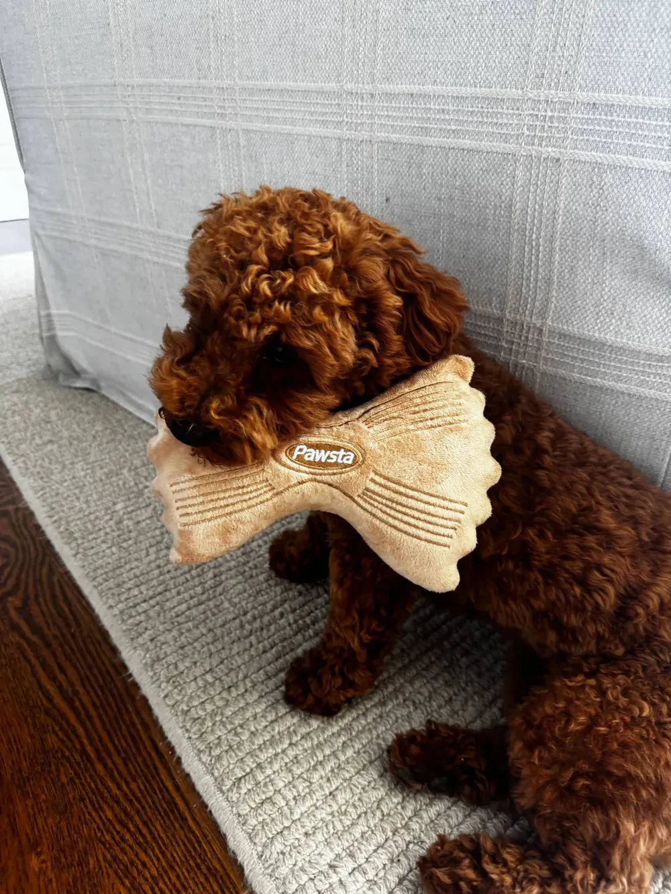

Our story
It started with one very picky puppy.
When we brought our puppy home, we did what every new dog owner does. We bought every toy at the pet store. She ignored all of them. The squeaky ones, the rope ones, the squeaky rope ones. Nothing held her attention for more than a minute, and the selection was honestly pretty uninspired.
So we started making our own at the kitchen table. Somewhere along the way we tucked a layer of crinkle crunch material inside a soft plush bow tie, and that was the moment. She was obsessed. She carried it everywhere, crunched it for hours, and finally left our actual shoes alone.
That little farfalle became Pawsta. Every one is still designed in Boston, built to survive a picky puppy, and made with the exact same crunch that started it all.